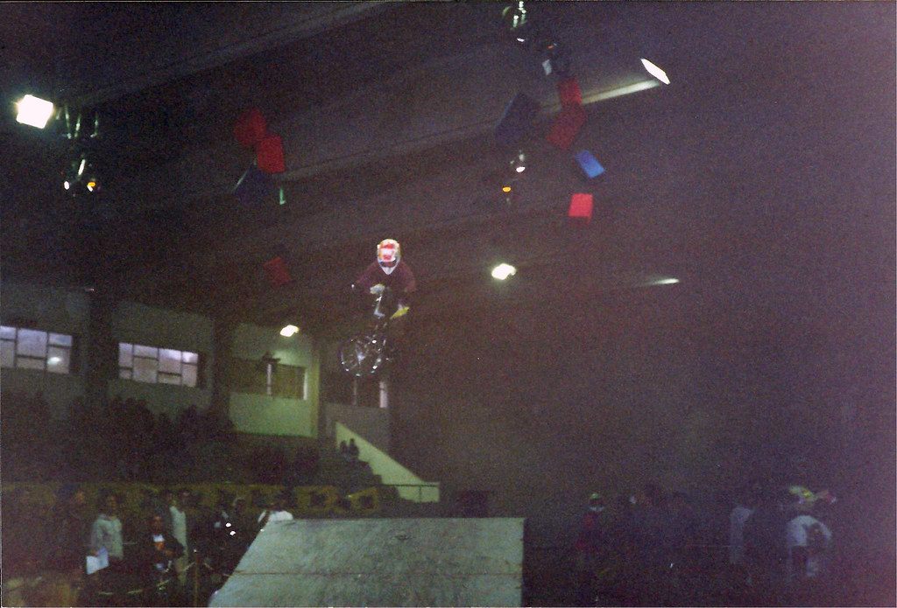
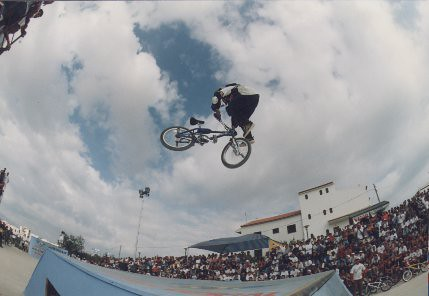
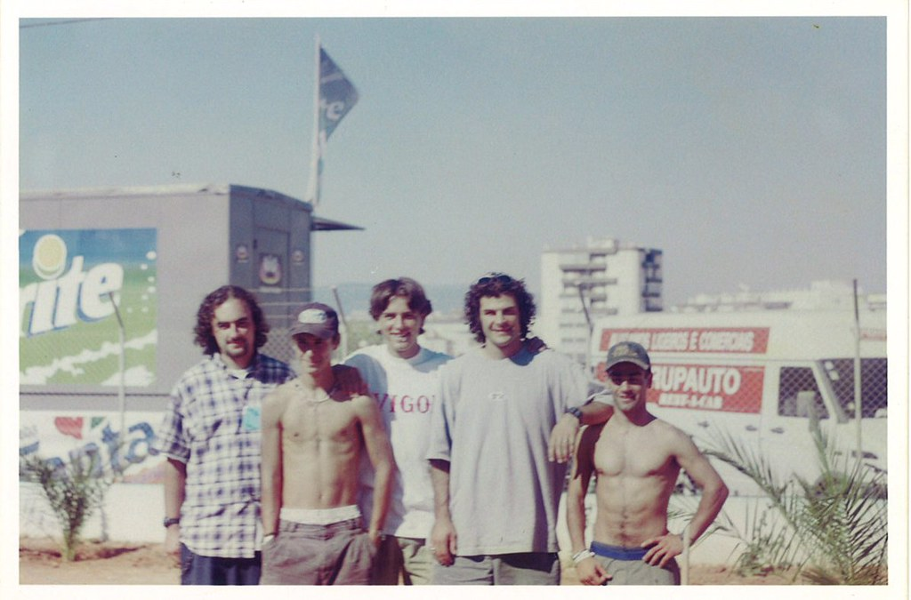
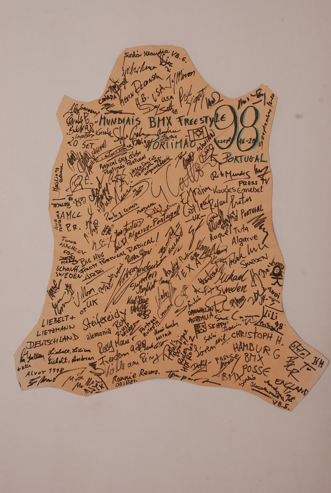
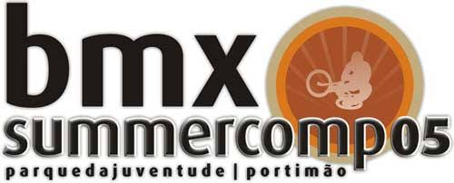
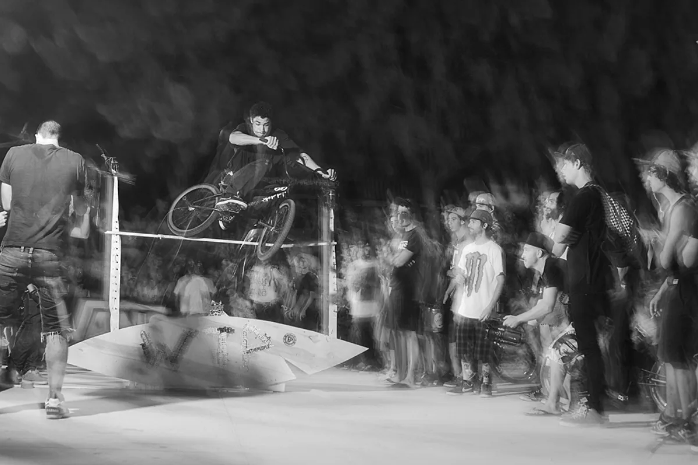
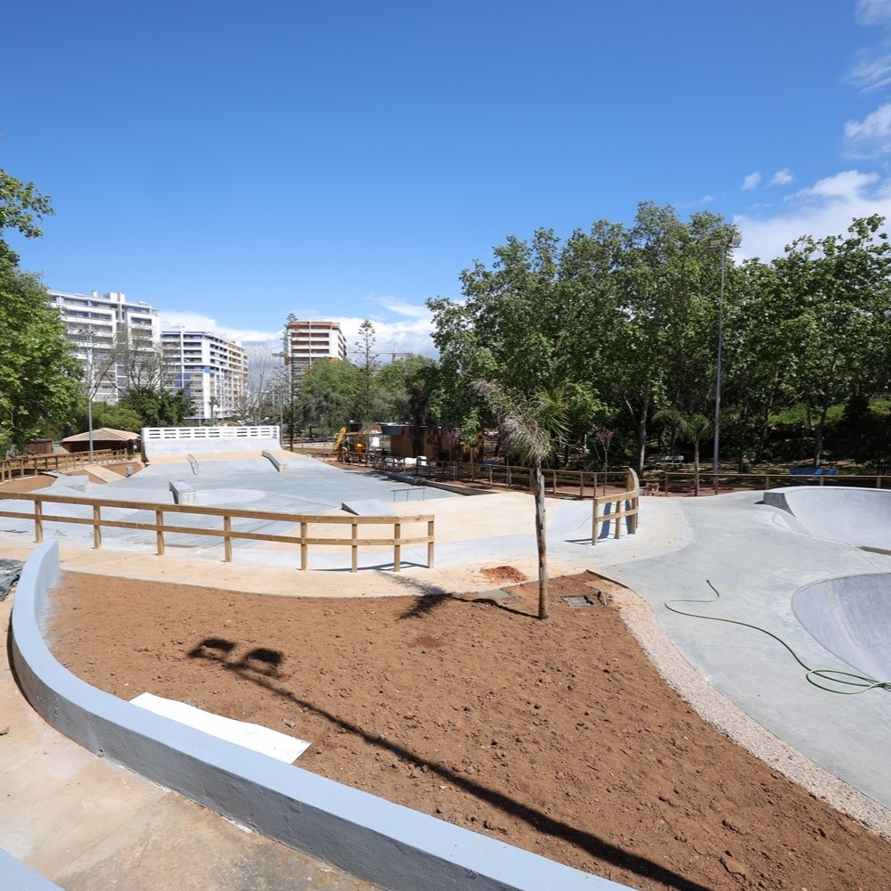

Parque da Juventude is personal to RideWire: it was our editor's old park. Its story is bigger than a set of ramps. It is a BMX community that started before the park opened, welcomed world-class riders, lost its Freestyle ramps for years, kept riding the city, and finally saw a new concrete park arrive.
BMX was here before the park
Clube Bicross de Portimao began in 1987, when a group of 15 young bike enthusiasts set out to build a local scene. The club was formalised in 1994. Its early life included rides, local gatherings and street jams; BMX in Portimao was already a community, not just a facility.

The Air & Ground Masters II image dates to 1995, before the Youth Park existed. It gives us a glimpse of the local BMX scene that was already forming around Portimao.
1996: a park opens, a scene arrives
Portimao's municipal archive records Parque da Juventude opening on 27 September 1996 at Quinta do Amparo, beside the V6. The original plan called for a BMX track, a skatepark, a multi-sport court, a gymnastics circuit, a playground and a remote-control car track.

1998: Portimao on the world BMX map
Two years later, Portimao hosted the BMX Freestyle Worlds. Riders from more than 15 countries competed across flatland, mini, dirt, vert and street. The old-school archive preserves two photos captioned as Mat Hoffman in Portimao in 1998, alongside World Championship images and snapshots of the local BMX community.


Mat Hoffman is not just a name in the story: he was in Portimao. The photographs make that connection tangible, and the signed Worlds keepsake captures the scale of the gathering. For a park in the Algarve, this was a remarkable moment on the international BMX calendar.
2005: the ramps became a community
Around BMX Summer Comp 2005, I was a kid taking to the ramps for the first time. It was also where I met people who would become friends for life: Peter Ellinger, Pedro Dias, Pedro Seca, Ruben "Trolha" Antonio, Nuno Aguas, Texas, Zen, Filipe Sebastião, Silveira and many more.
The Portuguese BMX scene felt full of energy then. For me, Parque da Juventude was more than somewhere to ride: it was where friendships began and where contests and everyday sessions brought people together. Those memories are one of the reasons this park's story matters so much to me.

Watch the BMX Summer Comp 2005 video on YouTube.
Ramps, jams and another generation
The park continued to host Freestyle activity. In 2008, the BMX Summer Comp brought an international BMX Freestyle event to Parque da Juventude. In September 2010, the Vans Rebel Jam came to Portimao. DIG BMX later recalled that the local scene had been struggling to fund ramps and that the event left a brand-new park behind for local riders.

A personal marker. The Rebel Jam park and the BMX contests I attended are the last ones I would have been part of. Those are the final snapshots of that contest era in my own memory of the place.
Building the Rebel Jam park
There is another video from that era that captures the work behind the event as well as the riding. It includes the build of the Rebel Jam skatepark— and, as I remember it, a few friends decided the funniest way to wake me up was with a homemade flamethrower.
Watch the Rebel Jam park build video on Vimeo.
When the ramps were gone, the city became the spot
Portimao riders did not stop riding when the park changed. A 2014 INOUT BMX crew edit documents local riders on Portimao's streets as well as at the Rebel Jam park. The street sessions were part of the scene's vocabulary; for our editor, they also recall the period when riders had to find their own places to ride.
By 2022, the loss of the Freestyle ramps was being stated plainly. In an interview with Algarve Vivo, club president Nuno Aguas said the club's Freestyle activity had stopped because they were left without ramps in the park. The same report described a new skatepark as planned for that autumn.
Earlier plans had proposed turning the old wooden-ramp area into an informal games court and putting a new skate facility on the remote-control car track. The work was delayed: local reporting in 2020 described the wider park as degraded and the redevelopment as still pending.
The Race track kept its own line
The BMX Race facility followed a separate path. A redesigned 400-metre BMX Race track opened in June 2019, funded by the municipality and developed from a Clube Bicross de Portimao project. When the wider park closed for redevelopment in October 2023, the municipality said Race athletes would retain access to the track through a separate entrance.
2025: a new park, and a link to the old one
Parque da Juventude reopened in April 2025 after around 18 months of redevelopment. The new concrete Parque Radical was built on the former remote-control car track, with a street course and bowl designed for skate and BMX. Meanwhile, the old wooden-ramp zone became a multi-sport court. The BMX Race track remained a distinct facility within the wider park.

For anyone who rode here, these changes are not just a planning timeline. They are different generations of riders, different shapes of ramp, a stretch when Freestyle had nowhere purpose-built to go, and a community that kept the bike moving anyway. The new park is another chapter, but it sits on top of a BMX history that began long before the concrete.